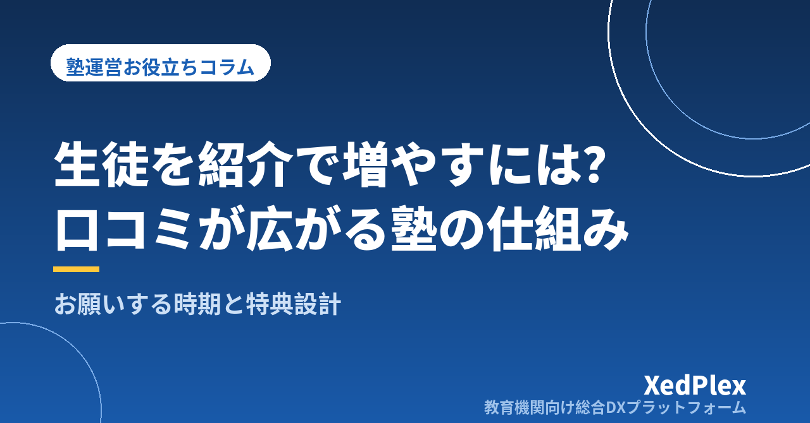

塾の生徒を紹介・口コミで増やす仕組み｜お願いするタイミングと特典設計、お礼までの流れ

チラシを撒いても反応が薄い。ポータルサイトに掲載すると月々の費用がかさむ。それでも生徒は増やしたい──個人塾・小規模塾の塾長にとって、集客は永遠の悩みです。そんな中で「うちは紹介が多いんですよ」という塾があります。広告費をほとんどかけず、在塾生の兄弟や友人、保護者のつながりで新しい生徒が入ってくる。理想的な状態に見えます。
ただ、その塾でも最初から紹介が回っていたわけではありません。多くの場合、「紹介してもらえたらありがたい」と願うだけで、紹介が起きる条件を整えていないのが、紹介が増えない理由です。この記事では、紹介・口コミが「たまたま」で終わる原因を分解したうえで、お願いするのに適したタイミング、無理のない特典設計、そしてお礼と記録までの流れを、小規模塾の実務目線で整理します。
なぜ紹介は「たまたま」で終わるのか
紹介が起きるには、保護者の中で3つの条件が同時に揃う必要があります。逆にいえば、どれか1つでも欠けると紹介は起こりません。
| 条件 | 欠けているときの保護者の状態 |
|---|---|
| ①満足している | 「悪くはないけど、人に勧めるほどかは分からない」 |
| ②言葉にできる | 「良い塾だとは思うけど、何が良いのか説明しにくい」 |
| ③きっかけがある | 「勧めたい気持ちはあるが、話す場面がないまま忘れた」 |
塾長が「紹介が来ない」と感じているとき、多くは①ではなく②と③でつまずいています。保護者は満足していても、それを他人に説明する言葉を持っておらず、話題に出す機会もないまま日々が過ぎていく。ここを塾側から少しだけ手助けするのが、「紹介の仕組み化」です。
なお、①がまだ十分でないと感じるなら、紹介制度を作るより先に、日常の満足度を上げるほうが先決です。保護者が何を不安に思うのかは、退塾を防ぐ保護者コミュニケーションの記事で整理しています。紹介が増える塾と、退塾が少ない塾は、実は同じ土台の上に成り立っています。
紹介の前に整える「言葉にできる材料」
保護者が友人に塾を勧めるとき、実際に口にするのは「面倒見がいい」「うちの子に合っていた」といった短いひと言です。この言葉のもとになるのは、抽象的な指導方針ではなく、保護者が実際に体験した具体的な出来事です。
- 「毎回、今日何をやったかの報告が来る」
- 「入退室の通知が来るので、塾に着いたか分かって安心」
- 「テスト前に自習に来ていいと声をかけてくれた」
- 「面談で、次に何をやるかを紙で見せてくれた」
どれも派手な話ではありませんが、こうした事実は他人に説明しやすく、聞いた側にも伝わります。逆に「先生がいい人」だけでは、相手の判断材料になりません。つまり紹介を増やす第一歩は、キャンペーンを作ることではなく、保護者が語れる事実を日常的に届けておくことです。通知・報告・面談といった接点の設計については、保護者向け連絡アプリに必要な機能の記事や保護者面談の準備の記事もあわせて参考にしてください。
紹介をお願いするのに適した5つのタイミング
「紹介してください」と言い出しにくい、という塾長は少なくありません。押し売りのようで気が引ける、という感覚はもっともです。ただ、タイミングを選べば、紹介のお願いは自然な会話の一部になります。保護者の満足がいちばん高まっている瞬間に、軽く触れるのがコツです。
| タイミング | 声のかけ方の例 |
|---|---|
| 定期テストの結果が出た直後 | 「今回よく頑張りました。もしお友達で困っている方がいたら、いつでも見学にいらしてくださいとお伝えください」 |
| 保護者面談の終わり | 「ご近所やお友達で塾を探している方がいらしたら、体験だけでも声をかけていただければ」 |
| 保護者から感謝の言葉をもらったとき | 「ありがとうございます。同じように悩んでいる方がいたら、遠慮なくご紹介ください」 |
| 兄弟姉妹が進級・受験学年になる時期 | 「下のお子さんも、そろそろ体験にいらっしゃいますか」 |
| 入試・受験が終わったあと | 「後輩の保護者の方から相談されることがあれば、ぜひお声がけください」 |
ポイントは、「紹介してください」ではなく「困っている方がいたら教えてあげてください」という言い方にすることです。保護者にとっては、塾への協力ではなく、友人への親切という位置づけになります。心理的な負担がぐっと下がり、断られたときの気まずさもありません。
①事実を伝える（今回よく頑張っていました）→②相手に負担のない依頼（もしお困りの方がいたら）→③行動のハードルを下げる（体験や見学だけでも大丈夫です）。この3つを短くつなげるだけで十分です。長く説明するほど、営業らしさが出てしまいます。
加えて、季節講習の案内や進級のお知らせに1行添えておく方法もあります。口頭で言いそびれる塾長でも、書面やメッセージなら続けやすいはずです。
紹介特典（紹介制度）の設計、4つの注意点
紹介特典を用意するかどうかは、塾によって考え方が分かれます。用意する場合は、次の4点を先に決めておくとトラブルになりません。
1. 紹介する側とされる側、両方に用意する
紹介した保護者だけに特典があると、「うちの得のために友人を誘った」と受け取られかねません。紹介された側にも入塾金の割引や初月の教材費無料などを用意すると、紹介する側が声をかけやすくなります。「あなたにも良いことがあるから」と言えるかどうかは、想像以上に大きな違いです。
2. 金額より「気持ちが伝わる形」を優先する
高額な特典は、かえって身構えさせます。月謝1か月分の割引のような大きな特典より、図書カードや文房具、月謝の一部割引など、負担にならない範囲のほうが自然に受け取ってもらえます。特典目当ての紹介が増えると、塾の方針と合わない生徒が入って早期に退塾する、という別の問題も生まれます。
3. 条件と時期を明文化する
あとで揉めやすいのが条件のあいまいさです。最低限、次の項目は紙かウェブに書き出しておきましょう。
- 特典が発生する時点（入塾申込時か、初月の月謝納入後か）
- 体験のみで入塾しなかった場合の扱い
- 兄弟姉妹の入塾は紹介に含めるか
- 複数人を紹介した場合、特典は人数分か上限ありか
- 紹介者が退塾したあとに、紹介された生徒が入塾した場合の扱い
また、月謝の割引で特典を出す場合は、その月の請求額が通常と変わります。請求書発行の記事でも触れたとおり、割引が請求に反映されないミスは信頼を大きく損ないます。特典を決めた時点で、請求側の処理をどうするかまでセットで決めておくのが安全です。
4. 「紹介がなくても関係は変わらない」と伝える
制度を案内するときは、紹介しないことが不利にならないと分かる書き方にします。「ご協力いただける方は」「無理のない範囲で」といったひと言を添えるだけで、保護者の受け取り方は変わります。紹介制度は、あくまで既にある好意を形にしやすくするための仕組みです。
紹介が来てから入塾までの流れを決めておく
せっかく紹介してもらっても、その後の対応が遅かったり、紹介であることが講師に共有されていなかったりすると、次の紹介につながりません。次の流れをあらかじめ決めておきます。
- 受付：問い合わせの時点で「どなたのご紹介か」を必ず聞き、記録する。電話・フォーム・LINEなど、どの窓口で聞かれても同じ質問ができるようにしておく。
- 初回対応：紹介であることを踏まえ、「◯◯さんからお話は伺っています」とひと言添える。紹介者の顔を立てる対応が、その後の口コミを左右します。
- 体験・面談：通常の体験授業の流れに乗せる。ここでの進め方は体験授業から入塾につなげる5ステップで詳しく整理しています。
- 紹介者への報告とお礼：入塾が決まったら、その日のうちに紹介者へ連絡する。入塾しなかった場合も、「お声がけいただきありがとうございました」と伝える。ここを省く塾が非常に多く、次の紹介が止まる一因になります。
- 特典の適用：決めた時点・決めた形で、確実に渡す。渡し忘れは、好意を裏切る形になってしまいます。
とくに4番目のお礼は、特典より効果があります。「自分の紹介がちゃんと届いた」という実感があると、保護者は次の機会にも声をかけてくれます。
紹介の記録を残して、次につなげる
紹介を仕組みとして続けるには、記録が要ります。名簿に次の項目を1列ずつ足すだけでも、見えてくるものがあります。
| 記録する項目 | 分かること |
|---|---|
| 入塾のきっかけ（紹介／チラシ／検索／看板など） | どの経路が実際に入塾につながっているか |
| 紹介者の名前 | 誰が塾を支えてくれているか／お礼の抜け漏れ防止 |
| 紹介日と入塾日 | 紹介が起きやすい時期（学期末・受験後など） |
| 特典の適用状況 | 渡し忘れ・請求への反映漏れの防止 |
1年分たまると、「紹介は3月と9月に多い」といった傾向が見えてきます。そうなれば、チラシを撒く時期や声かけを強める時期を、根拠を持って決められます。エクセルでも始められますが、名簿と請求と保護者連絡が散らばっていると更新が続きません。管理方法の見直しについては、エクセル管理の限界と乗り換えの判断基準もご覧ください。
なお、紹介者の氏名を記録し、紹介された方の情報を扱う以上、個人情報の管理は避けて通れません。「誰が誰を紹介したか」は保護者同士の関係に関わる情報でもあるため、教室内での共有範囲は限定するのが無難です。基本的な考え方は生徒の個人情報管理の記事にまとめていますが、判断に迷う場面や具体的な規程づくりは、専門家や所轄の窓口に確認することをおすすめします。
まとめ
紹介・口コミで生徒が増える塾は、運がいいわけではありません。保護者が語れる事実を日常的に届け、無理のないタイミングで軽く声をかけ、来てくれた紹介にきちんとお礼をして、それを記録しているだけです。特典の設計はその一部にすぎず、なくても成り立ちます。
まずは今週、直近で入塾した生徒の「きっかけ」を名簿に書き足すところから始めてみてください。そして次の面談の最後に、ひと言だけ添えてみる。紹介は、その積み重ねの先に自然と生まれます。
この記事を書いた運営より
私たちは、個人経営・小規模の学習塾向けに、生徒管理・QRコードでの入退室記録・月次請求・保護者へのLINE/メール通知・AIによる学習支援までをひとつにまとめた教育機関向け総合DXプラットフォーム「XedPlex（ゼドプレックス）」を開発・提供しています。初期費用は0円、料金は生徒1名あたり月額300円（税込）から。生徒50名の塾なら月15,000円（税込）です。全国8つの教室で導入されており、導入塾には紹介ホームページの無料作成も行っています。機能の詳細説明はこちら。
XedPlexの詳細を見る